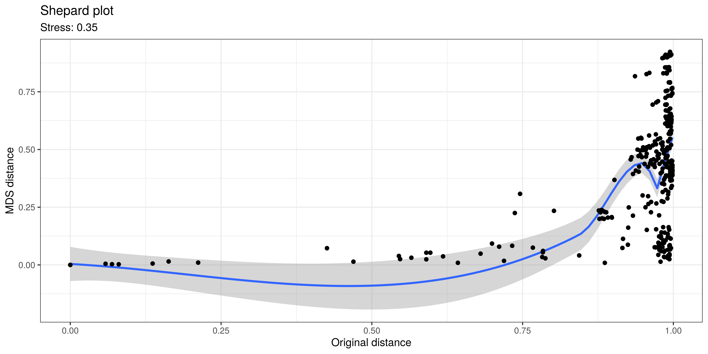
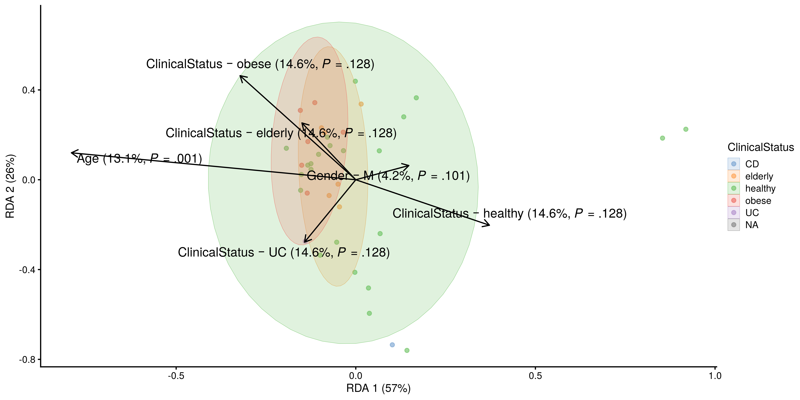
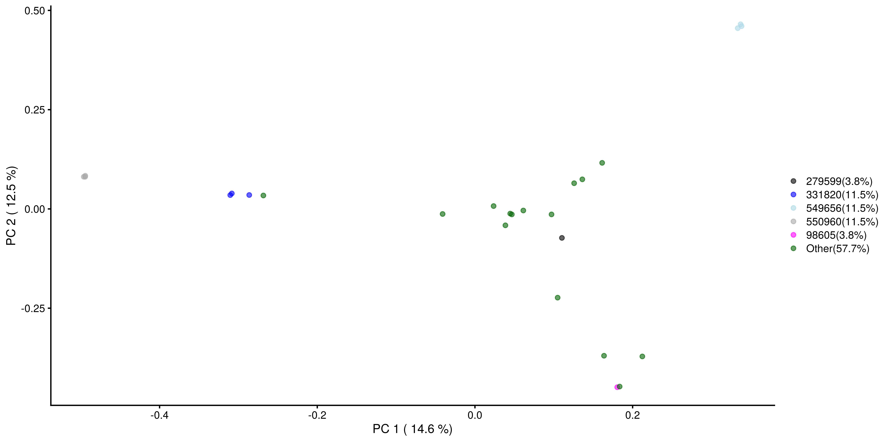
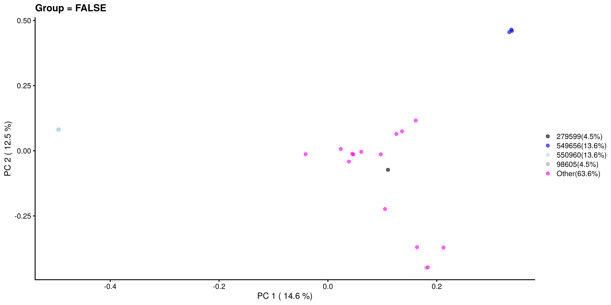
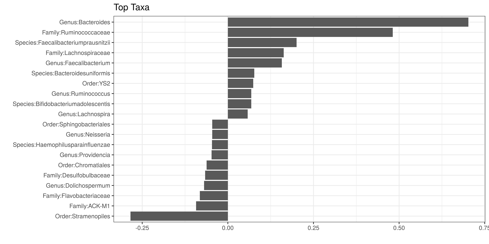

Chapter 8 Community Similarity
Whereas alpha diversity focuses on community variation within a community (one sample), beta diversity quantifies the dissimilarity between communities (multiple samples). In microbiome research, the most popular metrics of beta diversity include the Bray-Curtis index (for compositional data), Jaccard index (for presence / absence data, ignoring abundance information), Aitchison distance (Euclidean distance for clr transformed abundances, aiming to avoid the compositionality bias), and the Unifrac distance (that takes into account the phylogenetic tree information). Notably, only some of these measures are actual distances, as this is a mathematical concept whose definition is not satisfied by certain ecological measure, such as the Bray-Curtis index. Therefore, the terms dissimilarity and beta diversity are preferred.
In practice, beta diversity is usually represented as a dist object, a
triangular matrix where the distance between each pair of samples is encoded by
a specific cell. This distance matrix can then undergo ordination, which is an
important ecological tool to reduce the dimensionality of data for a more
efficient analysis and visualization. Ordination techniques aim to capture as
much essential information from the data as possible and turn it into a lower
dimensional representation. Dimension reduction is bound to lose information but
commonly used ordination techniques can preserve relevant information of sample
similarities in an optimal way, which is defined in different ways by different
methods.
Based on the type of algorithm, ordination methods in microbiome research can be generally divided in two categories: unsupervised and supervised ordination. The former includes Principal Coordinate Analysis (PCoA), Principal Component Analysis (PCA) and Uniform Manifold Approximation and Projection for Dimension Reduction (UMAP), whereas the latter is mainly represented by distance-based Redundancy Analysis (dbRDA). We will first discuss unsupervised ordination methods and then proceed to supervised ones.
To run the examples in this chapter, the following packages should be imported:
- mia: microbiome analysis framework
- scater: plotting reduced dimensions
- vegan: ecological distances
- ggplot2: plotting
- patchwork: combining plots
- dplyr: pipe operator
8.1 Unsupervised ordination
Unsupervised ordination methods variation in the data without additional information on covariates or other supervision of the model. Among the different approaches, Multi-Dimensional Scaling (MDS) and non-metric MDS (NMDS) can be regarded as the standard. They are jointly referred to as PCoA. For this demonstration we will analyse beta diversity in GlobalPatterns, and observe the variation between stool samples and those with a different origin.
# Example data
data("GlobalPatterns", package = "mia")
# Data matrix (features x samples)
tse <- GlobalPatterns
# some beta diversity metrics are usually applied to relative abundances
tse <- transformAssay(tse,
method = "relabundance")
# Add group information Feces yes/no
tse$Group <- tse$SampleType == "Feces"8.1.1 Comparing communities by beta diversity analysis
A typical comparison of community compositions starts with a visual representation of the groups by a 2D ordination. Then we estimate relative abundances and MDS ordination based on Bray-Curtis index between the groups, and visualize the results.
In the following examples dissimilarity is calculated with the function supplied
to the FUN argument. Several metrics of beta diversity are defined by the vegdist
function of the vegan package, which is often used in this context. However, such
custom functions created by the user also work, as long as they return a dist
object. In either case, this function is then applied to calculate reduced
dimensions via an ordination method, the results of which can be stored in the
reducedDim slot of the TreeSE. This entire process is contained by the runMDS
and runNMDS functions.
# Perform PCoA
tse <- runMDS(tse,
FUN = vegan::vegdist,
method = "bray",
name = "PCoA_BC",
assay.type = "relabundance")Sample dissimilarity can be visualized on a lower-dimensional display (typically
2D) using the plotReducedDim function from the scater package. This also
provides tools to incorporate additional information encoded by color, shape,
size and other aesthetics. Can you find any difference between the groups?
# Create ggplot object
p <- plotReducedDim(tse, "PCoA_BC",
colour_by = "Group")
# Calculate explained variance
e <- attr(reducedDim(tse, "PCoA_BC"), "eig")
rel_eig <- e / sum(e[e > 0])
# Add explained variance for each axis
p <- p + labs(x = paste("PCoA 1 (", round(100 * rel_eig[[1]], 1), "%", ")", sep = ""),
y = paste("PCoA 2 (", round(100 * rel_eig[[2]], 1), "%", ")", sep = ""))
pFigure 8.1: MDS plot based on the Bray-Curtis distances on the GlobalPattern dataset.
With additional tools from the ggplot2 package, ordination methods can be compared to find similarities between them or select the most suitable one to visualize beta diversity in the light of the research question.
tse <- runMDS(tse,
FUN = vegan::vegdist,
name = "MDS_euclidean",
method = "euclidean",
assay.type = "counts")
tse <- runNMDS(tse,
FUN = vegan::vegdist,
name = "NMDS_BC")## initial value 47.733208
## iter 5 value 33.853364
## iter 10 value 32.891200
## final value 32.823570
## convergedtse <- runNMDS(tse,
FUN = vegan::vegdist,
name = "NMDS_euclidean",
method = "euclidean")## initial value 31.882673
## final value 31.882673
## convergedplots <- lapply(c("PCoA_BC", "MDS_euclidean", "NMDS_BC", "NMDS_euclidean"),
plotReducedDim,
object = tse,
colour_by = "Group")
((plots[[1]] | plots[[2]]) / (plots[[3]] | plots[[4]])) +
plot_layout(guides = "collect")
Figure 8.2: Comparison of MDS and NMDS plots based on the Bray-Curtis or euclidean distances on the GlobalPattern dataset.
The Unifrac method is a special case, as it requires data on the
relationship of features in form on a phylo tree. calculateUnifrac
performs the calculation to return a dist object, which can again be
used within runMDS.
tse <- runMDS(tse,
FUN = mia::calculateUnifrac,
name = "Unifrac",
tree = rowTree(tse),
ntop = nrow(tse),
assay.type = "counts")plotReducedDim(tse, "Unifrac",
colour_by = "Group")Figure 8.3: Unifrac distances scaled by MDS of the GlobalPattern dataset.
8.1.2 Other ordination methods
Other dimension reduction methods, such as PCA and UMAP, are inherited from the scater package.
tse <- runPCA(tse,
name = "PCA",
assay.type = "counts",
ncomponents = 10)
plotReducedDim(tse, "PCA",
colour_by = "Group")Figure 8.4: PCA plot on the GlobalPatterns data set containing sample from different sources.
As mentioned before, applicability of the different methods depends on your sample set and research question.
tse <- runUMAP(tse,
name = "UMAP",
assay.type = "counts",
ncomponents = 3)
plotReducedDim(tse, "UMAP",
colour_by = "Group",
ncomponents = c(1:3))Figure 8.5: UMAP plot on the GlobalPatterns data set containing sample from different sources.
8.1.3 Explained variance
The percentage of explained variance is typically shown for PCA ordination plots. This quantifies the proportion of overall variance in the data that is captured by the PCA axes, or how well the ordination axes reflect the original distances.
Sometimes a similar measure is shown for MDS/PCoA. The interpretation is generally different, however, and hence we do not recommend using it. PCA is a special case of PCoA with Euclidean distances. With non-Euclidean dissimilarities PCoA uses a trick where the pointwise dissimilarities are first cast into similarities in a Euclidean space (with some information loss i.e. stress) and then projected to the maximal variance axes. In this case, the maximal variance axes do not directly reflect the correspondence of the projected distances and original distances, as they do for PCA.
In typical use cases, we would like to know how well the ordination reflects the original similarity structures; then the quantity of interest is the so-called “stress” function, which measures the difference in pairwise similarities between the data points in the original (high-dimensional) vs. projected (low-dimensional) space.
Hence, we propose that for PCoA and other ordination methods, users would report relative stress, which varies in the unit interval and is better if smaller. This can be calculated as shown below.
# Quantify dissimilarities in the original feature space
x <- assay(tse, "relabundance") # Pick relabunance assay separately
d0 <- as.matrix(vegdist(t(x), "bray"))
# PCoA Ordination
pcoa <- as.data.frame(cmdscale(d0, k = 2))
names(pcoa) <- c("PCoA1", "PCoA2")
# Quantify dissimilarities in the ordination space
dp <- as.matrix(dist(pcoa))
# Calculate stress i.e. relative difference in the original and
# projected dissimilarities
stress <- sum((dp - d0)^2) / sum(d0^2)A Shepard plot visualizes the original versus the ordinated dissimilarity between the observations.
ord <- order(as.vector(d0))
df <- data.frame(d0 = as.vector(d0)[ord],
dmds = as.vector(dp)[ord])
ggplot(df, aes(x = d0, y = dmds)) +
geom_smooth() +
geom_point() +
labs(title = "Shepard plot",
x = "Original distance",
y = "MDS distance",
subtitle = paste("Stress:", round(stress, 2))) +
theme_bw()
8.2 Supervised ordination
dbRDA is a supervised counterpart of PCoA, that is, it takes into account the covariates specified by the user to maximize the variance with respect to the them. The result shows how much each covariate affects beta diversity. The table below illustrates the relation between supervised and unsupervised ordination methods.
| supervised ordination | unsupervised ordination | |
|---|---|---|
| Euclidean distance | RDA | PCA |
| non-Euclidean distance | dbRDA | PCoA |
We demonstrate the usage of dbRDA with the enterotype dataset, where samples correspond to patients. The colData contains the clinical status of each patient and a few covariates such as their gender and age.
# Load data
data("enterotype", package = "mia")
tse2 <- enterotype
# Apply relative transform
tse2 <- transformAssay(tse2,
method = "relabundance")dbRDA can be perfomed with the runRDA function. In addition to the arguments
previously defined for unsupervised ordination, this
function takes a formula to control for variables and an action to treat missing
values. Along with clinical status, which is the main outcome, we control for
gender and age, and exclude observations where one of these variables is missing.
# Perform RDA
tse2 <- runRDA(tse2,
assay.type = "relabundance",
formula = assay ~ ClinicalStatus + Gender + Age,
distance = "bray",
na.action = na.exclude)
# Store results of PERMANOVA test
rda_info <- attr(reducedDim(tse2, "RDA"), "significance")The importance of each variable on the similarity between samples can be
assessed from the results of PERMANOVA, automatically provided by the runRDA
function. We see that both clinical status and age explain more than 10% of the
variance, but only age shows statistical significance.
rda_info$permanova %>%
knitr::kable()| Df | SumOfSqs | F | Pr(>F) | Total variance | Explained variance | |
|---|---|---|---|---|---|---|
| Model | 6 | 1.1157 | 1.940 | 0.040 | 3.991 | 0.2795 |
| ClinicalStatus | 4 | 0.5837 | 1.522 | 0.132 | 3.991 | 0.1463 |
| Gender | 1 | 0.1679 | 1.751 | 0.111 | 3.991 | 0.0421 |
| Age | 1 | 0.5245 | 5.471 | 0.001 | 3.991 | 0.1314 |
| Residual | 30 | 2.8757 | NA | NA | 3.991 | 0.7205 |
To ensure that the homogeneity assumption holds, we retrieve the corresponding information from the results of RDA. In this case, none of the p-values is lower than the significance threshold, and thus homogeneity is observed.
rda_info$homogeneity %>%
knitr::kable()| Df | Sum Sq | Mean Sq | F | N.Perm | Pr(>F) | Total variance | Explained variance | |
|---|---|---|---|---|---|---|---|---|
| ClinicalStatus | 4 | 0.2511 | 0.0628 | 2.7440 | 999 | 0.091 | 1.0288 | 0.2440 |
| Gender | 1 | 0.0103 | 0.0103 | 0.4158 | 999 | 0.536 | 0.9283 | 0.0111 |
| Age | 29 | 0.3272 | 0.0113 | 17.0256 | 999 | 0.394 | 0.3319 | 0.9860 |
Next, we proceed to visualize the weight and significance of each variable on the similarity between samples with an RDA plot, which can be generated with the following custom function.
# Load packages for plotting function
library(stringr)
library(ggord)
rda <- attr(reducedDim(tse2, "RDA"), "rda")
# Covariates that are being analyzed
variable_names <- c("ClinicalStatus", "Gender", "Age")
# Since na.exclude was used, if there were rows missing information, they were
# dropped off. Subset coldata so that it matches with rda.
coldata <- colData(tse2)[ rownames(rda$CCA$wa), ]
# Adjust names
# Get labels of vectors
vec_lab_old <- rownames(rda$CCA$biplot)
# Loop through vector labels
vec_lab <- sapply(vec_lab_old, FUN = function(name){
# Get the variable name
variable_name <- variable_names[ str_detect(name, variable_names) ]
# If the vector label includes also group name
if( !any(name %in% variable_names) ){
# Get the group names
group_name <- unique( coldata[[variable_name]] )[
which( paste0(variable_name, unique( coldata[[variable_name]] )) == name ) ]
# Modify vector so that group is separated from variable name
new_name <- paste0(variable_name, " \U2012 ", group_name)
} else{
new_name <- name
}
# Add percentage how much this variable explains, and p-value
new_name <- expr(paste(!!new_name, " (",
!!format(round( rda_info$permanova[variable_name, "Explained variance"]*100, 1), nsmall = 1),
"%, ",italic("P"), " = ",
!!gsub("0\\.","\\.", format(round( rda_info$permanova[variable_name, "Pr(>F)"], 3),
nsmall = 3)), ")"))
return(new_name)
})
# Add names
names(vec_lab) <- vec_lab_old
# Create labels for axis
xlab <- paste0("RDA1 (", format(round( rda$CCA$eig[[1]]/rda$CCA$tot.chi*100, 1), nsmall = 1 ), "%)")
ylab <- paste0("RDA2 (", format(round( rda$CCA$eig[[2]]/rda$CCA$tot.chi*100, 1), nsmall = 1 ), "%)")
# Create a plot
plot <- ggord(rda, grp_in = coldata[["ClinicalStatus"]], vec_lab = vec_lab,
alpha = 0.5,
size = 4, addsize = -4,
#ext= 0.7,
txt = 3.5, repel = TRUE,
#coord_fix = FALSE
) +
# Adjust titles and labels
guides(colour = guide_legend("ClinicalStatus"),
fill = guide_legend("ClinicalStatus"),
group = guide_legend("ClinicalStatus"),
shape = guide_legend("ClinicalStatus"),
x = guide_axis(xlab),
y = guide_axis(ylab)) +
theme( axis.title = element_text(size = 10) )
plot
From the plot above, we can see that only age significantly describes differences between the microbial profiles of different samples. Such visual approach complements the previous results of PERMANOVA.
8.3 Case studies
8.3.0.1 Visualizing the most dominant genus on PCoA
In this section, we visualize the most dominant genus on PCoA. A similar visualization was proposed by (2021). First, we agglomerate the data at the Genus level and get the dominant taxa per sample.
# Agglomerate to genus level
tse_genus <- mergeFeaturesByRank(tse,
rank = "Genus")
# Convert to relative abundances
tse_genus <- transformAssay(tse,
method = "relabundance",
assay.type = "counts")
# Add info on dominant genus per sample
tse_genus <- addPerSampleDominantFeatures(tse_genus,
assay.type = "relabundance",
name = "dominant_taxa")Next, we perform PCoA with Bray-Curtis dissimilarity.
tse_genus <- runMDS(tse_genus,
FUN = vegan::vegdist,
name = "PCoA_BC",
assay.type = "relabundance")Finally, we get the top taxa and and visualize their abundances on PCoA. Note that A 3D interactive version of the plot below can be found in 18.
# Getting the top taxa
top_taxa <- getTopFeatures(tse_genus,
top = 6,
assay.type = "relabundance")
# Naming all the rest of non top-taxa as "Other"
most_abundant <- lapply(colData(tse_genus)$dominant_taxa,
function(x) {if (x %in% top_taxa) {x} else {"Other"}})
# Storing the previous results as a new column within colData
colData(tse_genus)$most_abundant <- as.character(most_abundant)
# Calculating percentage of the most abundant
most_abundant_freq <- table(as.character(most_abundant))
most_abundant_percent <- round(most_abundant_freq / sum(most_abundant_freq) * 100, 1)
# Retrieving the explained variance
e <- attr(reducedDim(tse_genus, "PCoA_BC"), "eig")
var_explained <- e / sum(e[e > 0]) * 100
# Define colors for visualization
my_colors <- c("black", "blue", "lightblue", "darkgray", "magenta", "darkgreen", "red")
# Visualization
plot <-plotReducedDim(tse_genus, "PCoA_BC",
colour_by = "most_abundant") +
scale_colour_manual(values = my_colors,
labels = paste0(names(most_abundant_percent), "(", most_abundant_percent, "%)")) +
labs(x = paste("PC 1 (", round(var_explained[1], 1), "%)"),
y = paste("PC 2 (", round(var_explained[2], 1), "%)"),
color = "")
plot
Similarly, we visualize and compare the sub-population.
# Calculating the frequencies and percentages for both categories
freq_TRUE <- table(as.character(most_abundant[colData(tse_genus)$Group == TRUE]))
freq_FALSE <- table(as.character(most_abundant[colData(tse_genus)$Group == FALSE]))
percent_TRUE <- round(freq_TRUE / sum(freq_TRUE) * 100, 1)
percent_FALSE <- round(freq_FALSE / sum(freq_FALSE) * 100, 1)
# Visualization
plotReducedDim(tse_genus[ , colData(tse_genus)$Group == TRUE], "PCoA_BC",
colour_by = "most_abundant") +
scale_colour_manual(values = my_colors,
labels = paste0(names(percent_TRUE), "(", percent_TRUE, "%)")) +
labs(x = paste("PC 1 (", round(var_explained[1], 1), "%)"),
y = paste("PC 2 (", round(var_explained[2], 1), "%)"),
title = "Group = TRUE", color = "")
plotReducedDim(tse_genus[ , colData(tse_genus)$Group == FALSE], "PCoA_BC",
colour_by = "most_abundant") +
scale_colour_manual(values = my_colors,
labels = paste0(names(percent_FALSE), "(", percent_FALSE, "%)")) +
labs(x = paste("PC 1 (", round(var_explained[1], 1), "%)"),
y = paste("PC 2 (", round(var_explained[2], 1), "%)"),
title = "Group = FALSE", color = "")
8.3.1 Testing differences in community composition between sample groups
Permutational Analysis of Variance (PERMANOVA; (2001)) is a widely used non-parametric multivariate method that aims to estimate the actual statistical significance of differences in the observed community composition between two groups of samples.
PERMANOVA tests the hypothesis that the centroids and dispersion
of the community are equivalent between the compared groups. A p-value
smaller than the significance threshold indicates that the groups have a
different community composition. This method is implemented with the
adonis2
function from the vegan package.
By default, the argument by is set to "terms", in which the order of variables
in the formula matters. In this case, each variable is analyzed sequentially, and
the result is different when more than 1 variable is introduced and their order differs.
Therefore, it is recommended to set by = "margin", which specifies that the
marginal effect of each variable is analyzed individually. You can view a
comparison between the two designs in chapter 18.1.
We can perform PERMANOVA either with adonis2 function or by first performing
dbRDA and then applying permutational test its results. An advantage of the latter
approach is that by doing so we can get coefficients: how much each taxa affects
the variation between communities.
# Agglomerate data to Species level
tse <- mergeFeaturesByRank(tse,
rank = "Species")
# Set seed for reproducibility
set.seed(1576)
# We choose 99 random permutations. Consider applying more (999 or 9999) in your
# analysis.
permanova <- adonis2(t(assay(tse, "relabundance")) ~ Group,
by = "margin", # each term (here only 'Group') analyzed individually
data = colData(tse),
method = "euclidean",
permutations = 99)
# Set seed for reproducibility
set.seed(1576)
# Perform dbRDA
dbrda <- dbrda(t(assay(tse,"relabundance")) ~ Group,
data = colData(tse))
# Perform permutational analysis
permanova2 <- anova.cca(dbrda,
by = "margin", # each term (here only 'Group') analyzed individually
method = "euclidean",
permutations = 99)
# Get p-values
p_values <- c(permanova["Group", "Pr(>F)"], permanova2["Group", "Pr(>F)"])
p_values <-as.data.frame(p_values)
rownames(p_values) <- c("adonis2", "dbRDA+anova.cca")
p_values## p_values
## adonis2 0.02
## dbRDA+anova.cca 0.02As we can see, the community composition is significantly different between the groups (p < 0.05), and these two methods give equal p-values.
Let us visualize the model coefficients for species that exhibit the largest differences between the groups. This gives some insights into how the groups tend to differ from each other in terms of community composition.
# Add taxa info
sppscores(dbrda) <- t(assay(tse, "relabundance"))
# Get coefficients
coef <- dbrda$CCA$v
# Get the taxa with biggest weights
top.coef <- head(coef[rev(order(abs(coef))), , drop = FALSE], 20)
# Sort weights in increasing order
top.coef <- top.coef[order(top.coef), ]
# Get top names
top_names <- names(top.coef)[order(abs(top.coef), decreasing = TRUE)]df <- data.frame(x = top.coef,
y = factor(names(top.coef), unique(names(top.coef))))
ggplot(df, aes(x = x, y = y)) +
geom_bar(stat = "identity") +
labs(x = "", y= "", title = "Top Taxa") +
theme_bw()
In the example above, the largest differences between the two groups can be attributed to Genus:Bacteroides (elevated in the first group) and Family:Ruminococcaceae (elevated in the second group), and many other co-varying species.
8.3.2 Checking the homogeneity condition
It is important to note that the application of PERMANOVA assumes homogeneous group dispersions (variances). This can be tested with the PERMDISP2 method (Anderson 2006) by using the same assay and distance method than in PERMANOVA.
anova(betadisper(vegdist(t(assay(tse, "counts"))), colData(tse)$Group))## Analysis of Variance Table
##
## Response: Distances
## Df Sum Sq Mean Sq F value Pr(>F)
## Groups 1 0.2385 0.2385 103 3.6e-10 ***
## Residuals 24 0.0554 0.0023
## ---
## Signif. codes: 0 '***' 0.001 '**' 0.01 '*' 0.05 '.' 0.1 ' ' 1If the groups have similar dispersion, PERMANOVA can be seen as an appropriate choice for comparing community compositions.
8.4 Summary
As a final note, we provide a comprehensive list of functions for the evaluation
of dissimilarity indices available in the mia and scater packages. The
calculate methods return a reducedDim object as an output, whereas the run
methods store the reducedDim object into the specified TreeSE.
- Canonical Correspondence Analysis (CCA):
calculateCCAandrunCCA - dbRDA:
calculateRDAandrunRDA - Double Principal Coordinate Analysis (DPCoA):
calculateDPCoAandrunDPCoA - Jensen-Shannon Divergence (JSD):
calculateJSDandrunJSD - MDS:
calculateMDSandrunMDS - NMDS:
calculateNMDSandrunNMDS - Overlap:
calculateOverlapandrunOverlap - t-distributed Stochastic Neighbor Embedding (t-SNE):
calculateTSNEandrunTSNE - UMAP:
calculateUMAPandrunUMAP
For more information on clustering samples by beta diversity, you can refer to:
- How to extract information from clusters
- Chapter 10 on community typing